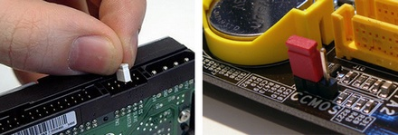

Accueil
B23
B24
B25
Sommaire
B24- Cavalier
Les cavaliers sont des petits dispositifs qui sont utilisés pour contrôler le fonctionnement des périphériques directement, sans utiliser de logiciel.
Voir une vidéo d'explications

En savoir plus